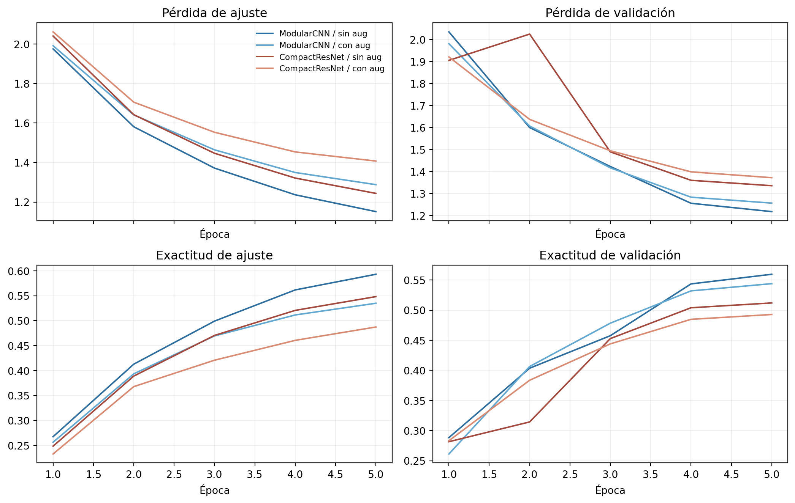

Problema: reconocer objetos en fotografías pequeñas cuando una CNN de pocas capas ya no ofrece suficiente capacidad. Aumentar profundidad puede mejorar la representación, pero también eleva costo, complica la optimización y facilita aprender detalles accidentales. Debemos elegir entre una CNN modular y una CNN residual compacta, con o sin augmentación, bajo un presupuesto corto de CPU.
6.1 De una CNN pequeña a una decisión de ingeniería
El capítulo anterior mostró que localidad y pesos compartidos aprovechan la estructura de una imagen. Dos convoluciones bastaban para Fashion-MNIST, cuyas prendas aparecen centradas, en escala de grises y sobre un fondo uniforme. Ahora usaremos CIFAR-10: fotografías RGB de \(32\times32\) con objetos, fondos, poses e iluminaciones variables (Krizhevsky 2009).
Una red más profunda puede combinar bordes en texturas, partes y configuraciones de objetos. Sin embargo, “más profunda” no significa automáticamente “mejor”:
cada resolución espacial multiplica el costo de una convolución;
Batch Normalization cambia entre entrenamiento e inferencia;
reducir resolución demasiado pronto puede borrar objetos pequeños;
una conexión residual facilita el flujo de información, pero no crea datos;
augmentar puede regularizar y, a la vez, ralentizar el ajuste; y
elegir por test convertiría el benchmark en parte del entrenamiento.
La pregunta no será qué arquitectura es universalmente superior. Buscaremos una solución defendible para un presupuesto concreto mediante una comparación pareada de precisión y costo.
NotaObjetivos de aprendizaje
Al terminar este capítulo podrás:
construir redes visuales mediante bloques modulares reutilizables;
explicar el estado de entrenamiento e inferencia de Batch Normalization;
derivar el aporte de una conexión residual al flujo de gradientes;
seguir resolución y campo receptivo a través de una red profunda;
implementar augmentación reproducible solo sobre mini-batches de ajuste;
contar parámetros, convoluciones y multiplicaciones-acumulaciones;
comparar cuatro brazos mediante semillas pareadas y checkpoints;
seleccionar una configuración con una regla declarada antes de abrir test; y
analizar recall, confusiones, errores y límites del benchmark.
PyTorch 2.8.0 | NumPy 2.0.2
Dispositivo: cpu | hilos: 1
Fijamos CPU, un hilo y algoritmos deterministas porque el tiempo forma parte del criterio. Los segundos seguirán dependiendo del procesador, la versión de las bibliotecas y la carga del sistema. Parámetros, formas y MACs son comparaciones más portables.
6.3 Obtener CIFAR-10 sin torchvision
CIFAR-10 contiene 50.000 imágenes oficiales de entrenamiento y 10.000 de test, con 6.000 imágenes por clase en total. El informe técnico describe su construcción a partir de 80 million tiny images(Krizhevsky 2009). La página oficial distribuye un archivo para Python, pero no declara una licencia específica para el dataset. El servidor original puede ser muy lento; por eso usamos primero una copia byte a byte en GitHub LFS, fijada a un commit, y conservamos la fuente oficial como respaldo. Este repositorio no redistribuye sus imágenes.
Verificamos SHA-256 como control criptográfico y también el MD5 publicado en la página oficial. MD5 se conserva solo para compatibilidad con ese dato oficial; no lo tratamos como garantía criptográfica suficiente.
Mostrar descarga y lector restringido de CIFAR-10
CIFAR_URLS = [ ("espejo GitHub LFS fijado","https://media.githubusercontent.com/media/""fancyerii/fancyerii.github.io/""a4afa6cc0cbfe92a49c12054807395d56e897521/""assets/cifar-10-python.tar.gz", ), ("fuente oficial de Toronto","https://www.cs.toronto.edu/~kriz/cifar-10-python.tar.gz", ),]DATA_DIR = Path(".cache/chapter06")ARCHIVE_PATH = DATA_DIR /"cifar-10-python.tar.gz"EXPECTED_SHA256 = ("6d958be074577803d12ecdefd02955f39262c83c16fe9348329d7fe0b5c001ce")OFFICIAL_MD5 ="c58f30108f718f92721af3b95e74349a"ROOT ="cifar-10-batches-py"EXPECTED_MEMBERS = {f"{ROOT}/batches.meta",f"{ROOT}/data_batch_1",f"{ROOT}/data_batch_2",f"{ROOT}/data_batch_3",f"{ROOT}/data_batch_4",f"{ROOT}/data_batch_5",f"{ROOT}/readme.html",f"{ROOT}/test_batch",}def file_digest(path, constructor, chunk_size=1<<20): digest = constructor()with path.open("rb") as source:while chunk := source.read(chunk_size): digest.update(chunk)return digest.hexdigest()def download_cifar10(): DATA_DIR.mkdir(parents=True, exist_ok=True) valid = ( ARCHIVE_PATH.exists()and file_digest(ARCHIVE_PATH, sha256) == EXPECTED_SHA256and file_digest(ARCHIVE_PATH, md5) == OFFICIAL_MD5 ) source_name ="caché local verificada"ifnot valid: errors = [] temporary_path = ARCHIVE_PATH.with_suffix(".download")for source_name, url in CIFAR_URLS: temporary_path.unlink(missing_ok=True)try: urlretrieve(url, temporary_path) actual_sha256 = file_digest(temporary_path, sha256) actual_md5 = file_digest(temporary_path, md5)if actual_sha256 != EXPECTED_SHA256 or actual_md5 != OFFICIAL_MD5:raiseValueError(f"SHA-256={actual_sha256}, MD5={actual_md5}" ) temporary_path.replace(ARCHIVE_PATH)breakexceptExceptionas error: temporary_path.unlink(missing_ok=True) errors.append(f"{source_name}: {error}")else:raiseRuntimeError("No fue posible obtener el archivo verificado. "+" | ".join(errors) )return {"origen de esta descarga": source_name,"SHA-256": file_digest(ARCHIVE_PATH, sha256),"MD5 oficial": file_digest(ARCHIVE_PATH, md5), }class RestrictedCifarUnpickler(pickle.Unpickler):"""Permite únicamente los constructores requeridos por los lotes oficiales.""" ALLOWED_GLOBALS = { ("numpy", "dtype"), ("numpy", "ndarray"), ("numpy.core.multiarray", "_reconstruct"), ("numpy._core.multiarray", "_reconstruct"), }def find_class(self, module, name):if (module, name) notinself.ALLOWED_GLOBALS:raise pickle.UnpicklingError(f"Global no permitido: {module}.{name}")returnsuper().find_class(module, name)def read_verified_archive():with tarfile.open(ARCHIVE_PATH, mode="r:gz") as archive: members = archive.getmembers() names = [member.name.rstrip("/") for member in members if member.isfile()]iflen(names) !=len(set(names)) orset(names) != EXPECTED_MEMBERS:raiseValueError("El TAR no contiene exactamente los archivos esperados")ifany(not member.isfile() andnot member.isdir() for member in members):raiseValueError("El TAR contiene enlaces u otro tipo de entrada")ifany(member.size >40_000_000for member in members):raiseValueError("Un miembro del TAR excede el tamaño esperado") batches = {}for name insorted(EXPECTED_MEMBERS - {f"{ROOT}/readme.html"}): member = archive.getmember(name) source = archive.extractfile(member)if source isNone:raiseValueError(f"No se pudo leer {name}") payload = source.read() batches[name] = RestrictedCifarUnpickler( BytesIO(payload), encoding="bytes" ).load()return batchesintegrity = download_cifar10()cifar_batches = read_verified_archive()pd.Series(integrity, name="digest")
origen de esta descarga caché local verificada
SHA-256 6d958be074577803d12ecdefd02955f39262c83c16fe93...
MD5 oficial c58f30108f718f92721af3b95e74349a
Name: digest, dtype: object
El espejo solo cambia el transporte: los dos digests exigen identidad binaria con el archivo publicado por Toronto. No extraemos el TAR al sistema de archivos. La lista cerrada de miembros, límites de tamaño, rechazo de enlaces y Unpickler restringido reducen la superficie de ataque. El hash fija además el contenido exacto antes de abrir el pickle. En general, nunca debe abrirse un pickle de procedencia desconocida.
6.4 Reconstruir y auditar el benchmark
Cada fila del formato Python concatena los tres canales aplanados. Restauramos NCHW y validamos el contrato antes de construir particiones.
CLASS_NAMES = ["avión", "automóvil", "ave", "gato", "ciervo","perro", "rana", "caballo", "barco", "camión",]def decode_batch(batch, expected_count):ifnotisinstance(batch, dict) orb"data"notin batch orb"labels"notin batch:raiseValueError("Lote CIFAR sin claves obligatorias") data = np.asarray(batch[b"data"]) labels = np.asarray(batch[b"labels"], dtype=np.int64)if data.shape != (expected_count, 3_072) or data.dtype != np.uint8:raiseValueError(f"Matriz de imágenes inesperada: {data.shape}, {data.dtype}")if labels.shape != (expected_count,) ornot np.isin(labels, range(10)).all():raiseValueError("Etiquetas inesperadas")return data.reshape(-1, 3, 32, 32).copy(), labels.copy()train_parts = [ decode_batch(cifar_batches[f"{ROOT}/data_batch_{index}"], 10_000)for index inrange(1, 6)]official_train_images = np.concatenate([part[0] for part in train_parts])official_train_labels = np.concatenate([part[1] for part in train_parts])official_test_images, official_test_labels = decode_batch( cifar_batches[f"{ROOT}/test_batch"], 10_000)meta_names = cifar_batches[f"{ROOT}/batches.meta"].get(b"label_names")decoded_names = [name.decode("ascii") for name in meta_names]if decoded_names != ["airplane", "automobile", "bird", "cat", "deer","dog", "frog", "horse", "ship", "truck",]:raiseValueError("Metadatos de clases inesperados")
train_hashes = [sha256(image.tobytes()).digest() for image in official_train_images]test_hashes = [sha256(image.tobytes()).digest() for image in official_test_images]data_audit = pd.Series({"imágenes oficiales de entrenamiento": len(official_train_images),"imágenes oficiales de test": len(official_test_images),"forma por imagen": str(tuple(official_train_images.shape[1:])),"tipo": str(official_train_images.dtype),"mínimo": int(official_train_images.min()),"máximo": int(official_train_images.max()),"clases": len(np.unique(official_train_labels)),"mínimo por clase en entrenamiento": int( np.bincount(official_train_labels).min() ),"máximo por clase en entrenamiento": int( np.bincount(official_train_labels).max() ),"duplicados exactos internos en entrenamiento": (len(train_hashes) -len(set(train_hashes)) ),"duplicados exactos internos en test": len(test_hashes) -len(set(test_hashes)),"imágenes exactas compartidas entre conjuntos oficiales": len(set(train_hashes) &set(test_hashes) ),})data_audit
imágenes oficiales de entrenamiento 50000
imágenes oficiales de test 10000
forma por imagen (3, 32, 32)
tipo uint8
mínimo 0
máximo 255
clases 10
mínimo por clase en entrenamiento 5000
máximo por clase en entrenamiento 5000
duplicados exactos internos en entrenamiento 0
duplicados exactos internos en test 0
imágenes exactas compartidas entre conjuntos oficiales 0
dtype: object
Los duplicados, si aparecen, se reportan como propiedad del benchmark y no se eliminan después de mirar test. El hash de píxeles detecta igualdad exacta, no escenas casi duplicadas, reescaladas o recortadas.
6.5 Fijar ajuste, validación y test bloqueado
El presupuesto usa 1.000 imágenes por clase para ajuste y 250 por clase para validación. Los 37.500 ejemplos oficiales restantes no intervienen. La semilla de partición es independiente de las semillas de optimización.
split_generator = np.random.default_rng(SPLIT_SEED)fit_indices = []validation_indices = []unused_indices = []for class_index inrange(10): class_indices = np.flatnonzero(official_train_labels == class_index) split_generator.shuffle(class_indices) fit_indices.extend(class_indices[:1_000]) validation_indices.extend(class_indices[1_000:1_250]) unused_indices.extend(class_indices[1_250:])fit_indices = np.asarray(fit_indices)validation_indices = np.asarray(validation_indices)unused_indices = np.asarray(unused_indices)split_generator.shuffle(fit_indices)split_generator.shuffle(validation_indices)split_generator.shuffle(unused_indices)ifset(fit_indices) &set(validation_indices):raiseValueError("Ajuste y validación se solapan")iflen(set(fit_indices) |set(validation_indices) |set(unused_indices)) !=50_000:raiseValueError("La partición no cubre el entrenamiento oficial")split_summary = pd.DataFrame({"partición": ["ajuste", "validación", "no utilizada", "test oficial bloqueado"],"imágenes": [10_000, 2_500, 37_500, 10_000],"por clase": [1_000, 250, 3_750, 1_000],"uso": ["gradientes", "checkpoint y selección", "ninguno", "evaluación final"],})split_summary
partición
imágenes
por clase
uso
0
ajuste
10000
1000
gradientes
1
validación
2500
250
checkpoint y selección
2
no utilizada
37500
3750
ninguno
3
test oficial bloqueado
10000
1000
evaluación final
Aunque el archivo de test ya fue validado, sus etiquetas no se consultarán para modelar, seleccionar épocas ni elegir el brazo. En particular, todavía no creamos X_test ni calculamos predicciones de test.
6.6 Calcular estadísticas solo con ajuste
La normalización se estima por canal sobre las 10.000 imágenes de ajuste. Usar validación o test produciría una fuga pequeña pero innecesaria.
Figura 6.1: Dos imágenes de ajuste por clase de CIFAR-10.
A \(32\times32\), varias clases comparten siluetas y fondos. La clase describe el objeto principal, no cada píxel. El benchmark tampoco informa cajas, poses ni condiciones de captura que permitan auditar subgrupos.
6.7 Diseñar con bloques al estilo VGG
VGG mostró que repetir convoluciones \(3\times3\) permite construir redes profundas con una regla modular sencilla (Simonyan y Zisserman 2015). Dos convoluciones \(3\times3\) con stride uno abarcan un campo receptivo de \(5\times5\) e intercalan una no linealidad adicional. No reproduciremos VGG-16: trasladamos su idea de bloques a un presupuesto mucho menor.
Cada bloque duplica canales y divide alto y ancho por dos. La cabeza usa promedio global, que evita una capa densa grande dependiente de la resolución.
y aprende \(\gamma\) y \(\beta\)(Ioffe y Szegedy 2015). En train() usa estadísticas del mini-batch y actualiza medias móviles. En eval() usa esas medias acumuladas. Por eso una misma imagen puede depender de sus compañeras durante entrenamiento, pero no debe depender de ellas durante inferencia.
torch.manual_seed(101)bn_demo = nn.BatchNorm2d(3, affine=False, momentum=0.1)anchor = torch.rand(1, 3, 4, 4)batch_dark = torch.cat([anchor, torch.zeros(7, 3, 4, 4)])batch_bright = torch.cat([anchor, torch.ones(7, 3, 4, 4)])bn_demo.train()anchor_train_dark = bn_demo(batch_dark)[0]anchor_train_bright = bn_demo(batch_bright)[0]running_mean_after_training = bn_demo.running_mean.clone()bn_demo.eval()anchor_eval_dark = bn_demo(batch_dark)[0]anchor_eval_bright = bn_demo(batch_bright)[0]bn_state_demo = pd.Series({"diferencia train() para la misma imagen": ( anchor_train_dark - anchor_train_bright ).abs().max().item(),"diferencia eval() para la misma imagen": ( anchor_eval_dark - anchor_eval_bright ).abs().max().item(),"media móvil absoluta": running_mean_after_training.abs().mean().item(),})bn_state_demo
diferencia train() para la misma imagen 5.085615
diferencia eval() para la misma imagen 0.000000
media móvil absoluta 0.098885
dtype: float64
eval() no desactiva gradientes; cambia módulos con comportamiento de estado, como BatchNorm y dropout. torch.inference_mode() sí evita construir el grafo. Durante ajuste llamaremos explícitamente model.train() y, antes de validar, model.eval().
6.9 Añadir una ruta residual
Una red residual aprende una transformación \(F(X)\) y devuelve
\[
Y=\operatorname{ReLU}(F(X)+S(X)),
\]
donde \(S\) es identidad cuando las formas coinciden o una proyección cuando cambian canales o resolución (He et al. 2016). Antes de la activación final,
Si \(S(X)=X\), existe una contribución identidad al gradiente además de la ruta aprendida. Esto facilita representar una corrección cercana a cero y transportar información. No garantiza que el gradiente total sea uno, que toda red profunda optimice bien ni que el modelo generalice.
Esta ResNet es deliberadamente atípica y pequeña. El pooling temprano reduce costo, pero puede descartar detalle. Sirve para estudiar la conexión residual y la frontera precisión-costo, no para afirmar que reproduce una ResNet estándar.
6.10 Resolución y campo receptivo
El campo receptivo teórico \(r_l\) y el salto \(j_l\) se actualizan para kernel \(k_l\) y stride \(s_l\) mediante
La tabla sigue la ruta convolucional más larga. Una suma residual combina rutas con campos distintos; reportamos el máximo.
Modelo
Etapa
Resolución
Canales
Campo receptivo
Salto
Modular
Entrada
32
3
1
1
Modular
Bloque 1
16
8
6
2
Modular
Bloque 2
8
16
16
4
Modular
Bloque 3
4
32
36
8
Residual
Stem + pool
16
8
4
2
Residual
Bloque 8
16
8
12
2
Residual
Bloque 16
8
16
24
4
Residual
Bloque 32
4
32
48
8
Un campo teórico mayor que la imagen significa que una unidad puede depender de toda ella, incluyendo padding; no significa que todos los píxeles influyan por igual. El campo receptivo efectivo suele concentrarse cerca del centro (Luo et al. 2016).
6.11 Auditar formas y recursos antes de entrenar
Los parámetros miden almacenamiento entrenable. Los MACs cuentan, de manera aproximada, multiplicaciones-acumulaciones de convoluciones y capas lineales para una imagen. No incluyen BN, ReLU, pooling ni movimiento de memoria y no son sinónimo de segundos.
La proyección \(1\times1\) cuenta como convolución. Que la arquitectura residual tenga más parámetros no obliga a que tenga más MACs: sus convoluciones ocurren principalmente después del pooling inicial.
6.12 Augmentar solo el conjunto de ajuste
Usaremos una transformación estándar para CIFAR-10:
padding de reflexión de cuatro píxeles por lado;
crop aleatorio de \(32\times32\) entre 81 posiciones; y
flip horizontal con probabilidad 0,5.
La reflexión evita introducir un marco negro constante. No crea observaciones independientes ni garantiza que la etiqueta sea correcta bajo cualquier transformación. Un flip horizontal es plausible para estas diez clases; un flip vertical no lo sería en general.
Figura 6.2: Padding reflectivo, crops y flips generados solo para ajuste.
Validación y test llaman normalize_images(..., augment=False). No guardamos versiones augmentadas ni transformamos de forma aleatoria durante evaluación.
6.13 Predeclarar el experimento 2x2
La comparación cruza arquitectura y augmentación:
Brazo
Arquitectura
Augmentación
ModularCNN / sin aug
modular
no
ModularCNN / con aug
modular
sí
CompactResNet / sin aug
residual
no
CompactResNet / con aug
residual
sí
Todos los brazos comparten:
semillas 17, 29 y 43;
cinco épocas y batch 128;
AdamW con tasa máxima 0,003 y weight decay 0,0005;
una época de warmup lineal y decaimiento coseno por paso;
entropía cruzada, CPU, un hilo y determinismo;
checkpoint de mayor exactitud de validación; y
en empates de exactitud, menor pérdida y luego época más temprana.
Cinco épocas son un presupuesto de laboratorio, no convergencia garantizada. AdamW ofrece progreso útil con pocas actualizaciones y desacopla weight decay (Kingma y Ba 2015; Loshchilov y Hutter 2019). El warmup limita actualizaciones tempranas mientras BatchNorm construye estadísticas; el coseno evita decidir la tasa mirando validación.
6.13.1 Regla de decisión
Antes de ejecutar declaramos:
se calcula la mediana de exactitud de validación de cada brazo;
el máximo define la referencia;
todo brazo a menos de 0,01 del máximo se considera empatado; y
entre empatados se elige el de menor mediana de segundos.
La tolerancia es estricta: una diferencia exactamente igual a 0,01 no empata. No se consulta test para resolver la decisión.
6.14 Implementar evaluación y checkpoints
Evaluamos por mini-batches para controlar memoria. La función devuelve logits solo cuando se necesitan para análisis posterior.
Los generadores separan orden y augmentación. Para una arquitectura y semilla, los brazos con y sin augmentación parten de los mismos pesos y reciben el mismo orden de índices. La aleatoriedad de un crop no desplaza la secuencia de batches.
6.15 Ejecutar doce entrenamientos
Esta es la celda costosa. En CPU de un hilo debe tomar alrededor de cinco minutos en un equipo moderno, pero el tiempo no es una promesa de portabilidad.
La tabla es el primer lugar donde observamos resultados del 2x2. Una diferencia entre brazos puede venir de arquitectura, regularización o interacción entre ambas; tres semillas no justifican una afirmación universal.
6.16 Leer curvas, no solo checkpoints
La semilla 29 fue fijada como representativa antes de entrenar. Mostramos todos los brazos, sin escoger la curva más atractiva.
arm_colors = {"ModularCNN / sin aug": "#2f6f9f","ModularCNN / con aug": "#62a8d1","CompactResNet / sin aug": "#a44a3f","CompactResNet / con aug": "#d98b73",}fig, axes = plt.subplots(2, 2, figsize=(11, 7), sharex=True)for arm, color in arm_colors.items(): history = runs[(arm, REPRESENTATIVE_SEED)]["history"] axes[0, 0].plot(history["época"], history["loss ajuste"], color=color, label=arm) axes[0, 1].plot( history["época"], history["loss validación"], color=color, label=arm ) axes[1, 0].plot( history["época"], history["exactitud ajuste"], color=color, label=arm ) axes[1, 1].plot( history["época"], history["exactitud validación"], color=color, label=arm )axes[0, 0].set_title("Pérdida de ajuste")axes[0, 1].set_title("Pérdida de validación")axes[1, 0].set_title("Exactitud de ajuste")axes[1, 1].set_title("Exactitud de validación")for axis in axes.flat: axis.set_xlabel("Época") axis.grid(alpha=0.2)axes[0, 0].legend(frameon=False, fontsize=8)fig.tight_layout()plt.show()

Figura 6.3: Curvas de los cuatro brazos para la semilla representativa 29.
Augmentación puede elevar la pérdida de ajuste porque cada época presenta vistas más difíciles. Eso no es por sí solo un fallo. También puede requerir más épocas para compensar su regularización; el presupuesto común favorece al brazo que aprende más rápido, coherente con el problema planteado.
La CNN modular sin augmentación alcanza una mediana de 0,5596. Encender augmentación la reduce a 0,5500 bajo el mismo horizonte. La ResNet compacta pasa de 0,5116 sin augmentación a 0,4948 con ella. El signo coincide en las tres semillas de cada arquitectura: durante cinco épocas, la variación adicional ralentiza el ajuste más de lo que mejora la generalización.
El rango entre semillas describe sensibilidad algorítmica para una partición fija. No es un intervalo de confianza poblacional y no incorpora incertidumbre por otra selección de imágenes.
6.18 Construir la frontera precisión-costo
Un brazo está dominado si existe otro al menos tan rápido y al menos tan exacto, con mejora estricta en una dimensión. La frontera no convierte segundos de este equipo en una propiedad universal, pero hace visible el compromiso observado.
Figura 6.5: Frontera observada entre exactitud mediana y tiempo mediano de entrenamiento.
Parámetros no sustituyen esta gráfica: un modelo puede almacenar pocos pesos y reutilizarlos en muchas posiciones. MACs tampoco capturan optimizaciones del backend, ancho de memoria ni costo de augmentar.
La ResNet sin augmentación usa 0,98 millones de MACs por imagen frente a 2,58 millones de la CNN, una reducción de 62%, y tarda 18,6 frente a 35,0 segundos de mediana, cerca de 47% menos. A cambio pierde 0,048 de exactitud. Por eso ambos quedan en la frontera observada; los brazos augmentados están dominados dentro de este presupuesto.
6.19 Aplicar la regla predeclarada
best_median_accuracy = validation_summary["mediana_exactitud"].max()eligible_arms = validation_summary[ (best_median_accuracy - validation_summary["mediana_exactitud"]) <0.01].copy()decision_row = eligible_arms.sort_values( ["mediana_segundos", "brazo"], ascending=[True, True]).iloc[0]selected_arm = decision_row["brazo"]decision_audit = pd.Series({"máxima mediana de exactitud": best_median_accuracy,"brazos a menos de 0.01": ", ".join(eligible_arms["brazo"]),"brazo seleccionado": selected_arm,"mediana de exactitud seleccionada": decision_row["mediana_exactitud"],"mediana de segundos seleccionada": decision_row["mediana_segundos"],})decision_audit
máxima mediana de exactitud 0.5596
brazos a menos de 0.01 ModularCNN / sin aug, ModularCNN / con aug
brazo seleccionado ModularCNN / con aug
mediana de exactitud seleccionada 0.55
mediana de segundos seleccionada 34.073694
dtype: object
La regla puede escoger un brazo ligeramente menos exacto si cae dentro de la tolerancia y es más rápido. Eso no contradice el protocolo: formaliza que menos de un punto porcentual no compensa cualquier costo adicional en este problema.
ImportanteLa frontera de test permanece cerrada
Hasta esta celda solo se usaron ajuste y validación. El brazo, las tres semillas, los checkpoints y la regla de análisis de errores ya están cerrados. A partir de la siguiente sección, test sirve para estimar desempeño final, no para reajustar el capítulo.
6.20 Abrir una vez el test oficial
Evaluamos exclusivamente los tres checkpoints del brazo seleccionado. No calculamos resultados de test para los otros brazos.
brazo evaluado ModularCNN / con aug
mediana exactitud test 0.5557
mínimo exactitud test 0.5486
máximo exactitud test 0.5606
dtype: object
La exactitud mediana de test es 0,5709 y las tres corridas quedan entre 0,5689 y 0,5723. El rango estrecho no corrige la incertidumbre del único split, pero muestra que el resultado final no depende de una sola inicialización afortunada.
Estas cifras son una evaluación final condicionada a CIFAR-10. No se usa su resultado para cambiar arquitectura, augmentación, tasa, épocas o semilla. Una nueva decisión motivada por test necesitaría otro conjunto independiente.
6.21 Examinar confusión y recall por clase
La semilla 29 fue predeclarada como representativa, no elegida por su resultado. La matriz se normaliza por clase real; su diagonal coincide con recall.
gato y ave obtienen los recalls más bajos, 0,273 y 0,353; automóvil y camión alcanzan 0,718 y 0,714. La brecha advierte que una exactitud cercana a 0,57 no representa por igual las diez categorías.
Figura 6.6: Confusión normalizada del brazo seleccionado en test, semilla predeclarada 29.
La exactitud agregada puede ocultar clases con recall bajo. Confundir dos animales visualmente próximos no tiene el mismo significado aplicado que confundir un automóvil con un ave, aunque ambos resten una observación.
6.22 Inspeccionar errores sin escoger los más convenientes
Antes de abrir test fijamos la semilla 29 y una regla simple: mostrar los primeros doce errores según el orden oficial. No ordenamos por confianza ni buscamos casos que apoyen una narrativa.
Figura 6.7: Primeros doce errores en el orden oficial de test para la semilla 29.
La probabilidad máxima es confianza interna, no probabilidad calibrada de estar correcto. Los ejemplos tampoco explican causalmente qué píxeles usó la red. Son insumos para formular hipótesis sobre resolución, fondo, pose y ambigüedad.
6.23 Qué permite concluir el experimento
Las tablas ejecutadas permiten responder cuatro preguntas distintas:
capacidad observada: qué brazo alcanza mayor mediana de validación;
estabilidad: cuánto cambian checkpoints entre las tres semillas;
costo: qué arquitectura consume más tiempo y MACs;
generalización final: cómo se comporta solo el brazo seleccionado en test.
La regla de selección integra las dos primeras dimensiones con tiempo. No debe reemplazarse después de ver test por una explicación retrospectiva. Si la augmentación no mejora en cinco épocas, la conclusión correcta se limita a este presupuesto; no demuestra que augmentar sea inútil. Si una red residual no gana, no refuta las conexiones residuales: también cambian ancho, pooling, campo receptivo y número de operaciones.
6.24 Limitaciones
CIFAR-10 tiene baja resolución y diez categorías; no representa visión en producción ni imágenes médicas, satelitales o documentales.
La página oficial no declara una licencia del dataset. El capítulo descarga desde la fuente y el repositorio no redistribuye imágenes.
El subconjunto fijo usa solo una cuarta parte del entrenamiento oficial. Más datos podrían alterar el orden de los brazos.
Tres semillas miden variabilidad de optimización, no incertidumbre por splits, poblaciones o cambios de dominio.
Cinco épocas favorecen aprendizaje rápido y pueden perjudicar regularizadores cuyo beneficio aparece tarde.
BatchNorm con batch 128 no anticipa su comportamiento con batches pequeños.
AdamW y su schedule son una receta común, no el óptimo de cada arquitectura.
El weight decay se aplica también a parámetros de BatchNorm y sesgos.
MACs omiten operaciones y acceso a memoria; el tiempo depende del hardware.
El pooling inicial de CompactResNet abarata cómputo sacrificando detalle.
Reflection padding y flips expresan invariancias supuestas, no verificadas para cada imagen.
El test oficial puede contener duplicados o similitudes no capturadas por hashes exactos y no garantiza independencia del proceso histórico de construcción.
Exactitud trata todos los errores por igual y no evalúa calibración, robustez, equidad, latencia por solicitud ni consumo energético.
6.25 Qué hemos aprendido
Los bloques convierten una arquitectura en una regla verificable y reutilizable.
Repetir kernels \(3\times3\) aumenta no linealidad y campo receptivo.
BatchNorm usa el mini-batch en train() y medias móviles en eval().
Una ruta identidad añade un camino directo para activaciones y gradientes.
Resolución, canales y campo receptivo deben seguirse conjuntamente.
La augmentación pertenece exclusivamente al conjunto de ajuste.
Parámetros, convoluciones, MACs y segundos describen costos diferentes.
Checkpoints y semillas deben fijarse antes de abrir test.
Una tolerancia explícita permite tratar precisión y costo como una decisión, no como una carrera por decimales.
Confusiones, recall y errores revelan límites que la exactitud promedio oculta.
6.26 Ejercicios
Calcula parámetros y MACs de cada convolución de ModularCNN a mano y compáralos con model_resources().
Deriva el campo receptivo de ambas arquitecturas sin consultar la tabla.
Elimina el segundo Conv2d de cada bloque modular. Predice antes de entrenar cómo cambiarán parámetros, MACs y campo receptivo.
Demuestra con autograd que \(Y=F(X)+X\) contiene una contribución identidad en \(\partial Y/\partial X\) para un bloque lineal sin ReLU.
Repite el demo de BatchNorm con batches de 2, 8 y 128. Explica qué cambia y por qué eval() debe permanecer fijo.
Sustituye max pooling del stem residual por stride dos en su convolución y vuelve a calcular resolución y campo receptivo.
Implementa padding con ceros y compara visualmente sus crops con reflexión.
Añade una transformación vertical y argumenta, antes de entrenar, por qué puede violar la etiqueta.
Ejecuta diez épocas sin cambiar la regla de decisión y estudia si el efecto de augmentación depende del horizonte.
Sustituye AdamW por SGD con momentum. Ajusta la tasa solo con validación y documenta cuántas decisiones adicionales realizaste.
Excluye BatchNorm y sesgos del weight decay. Explica por qué esta comparación ya no modifica una sola variable.
Calcula macro-F1 además de exactitud y define una nueva regla antes de mirar los resultados.
Construye intervalos bootstrap sobre las imágenes de validación y explica por qué no reemplazan semillas ni nuevos splits.
Mide imágenes por segundo en inferencia con batches 1, 32 y 128. Separa latencia de throughput.
Identifica las dos clases con menor recall y propone una recolección de datos, no solo una modificación del modelo.
6.27 Reto
Diseña una comparación que permita estudiar conexiones residuales sin confundir su efecto con costo. Construye una CNN modular y una residual con resolución, canales, número de convoluciones y MACs tan próximos como sea posible. Mantén el split, las tres semillas y el protocolo de test bloqueado. Antes de ejecutar, define una diferencia mínima relevante, una tolerancia de costo y qué conclusión aceptarás si no aparece ventaja residual. Reporta curvas, gradientes tempranos, variabilidad y la frontera precisión-costo; no abras test para ambos diseños.
ImportantePuente al Capítulo 7
Aquí aprendimos representaciones desde cero con etiquetas limitadas y CPU. El Capítulo 7 preguntará cuándo conviene reutilizar una red visual preentrenada, cómo adaptar su cabeza sin contaminar evaluación y qué cambia cuando la fuente y el dominio objetivo no coinciden.
He, Kaiming, Xiangyu Zhang, Shaoqing Ren, y Jian Sun. 2016. «Deep Residual Learning for Image Recognition». Proceedings of the IEEE Conference on Computer Vision and Pattern Recognition, 770-78. https://doi.org/10.1109/CVPR.2016.90.
Ioffe, Sergey, y Christian Szegedy. 2015. «Batch normalization: Accelerating deep network training by reducing internal covariate shift». Proceedings of the 32nd International Conference on Machine Learning, 448-56. https://proceedings.mlr.press/v37/ioffe15.html.
Kingma, Diederik P., y Jimmy Ba. 2015. «Adam: A method for stochastic optimization». International Conference on Learning Representations. https://arxiv.org/abs/1412.6980.
Loshchilov, Ilya, y Frank Hutter. 2019. «Decoupled weight decay regularization». International Conference on Learning Representations. https://openreview.net/forum?id=Bkg6RiCqY7.
Simonyan, Karen, y Andrew Zisserman. 2015. «Very Deep Convolutional Networks for Large-Scale Image Recognition». International Conference on Learning Representations. https://arxiv.org/abs/1409.1556.